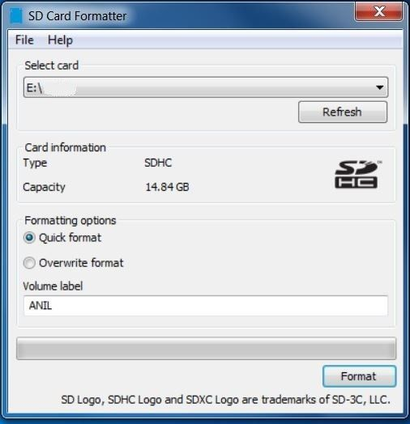

Versal Prime - VCK190 Evaluation Kit Ethernet TRD Tutorial |
PTP Phase Syncronization Application Deployment |
IEEE 1588 PTP Phase synchronization Platform¶
Note: This section applies to 2022.2 Phase Synchronization TRD only.
This IEEE 1588 PTP Ethernet platform demonstrates the functionality of the Multi Rate Media Access Control (MRMAC) IP to synchronize time, frequency, and phase of the Physical Hardware clocks (PHC) connected to a packet network that support IEEE 1588 Precision Time Protocol (PTP) protocol. The PHC of the VCK 190 board is synchronized to the PHC of the link partner that supports telecom profile (an another VCK 190 Board in this case) using PTP packets.
Features¶
4x25G configuration
2-step PTP Phase/Frequency Synchronization
PTP packet over IEEEE 802.3
PTP packet over UDP IPV4
Supports TCP/UDP Traffic
Setup Tested¶
VCK 190 Board <-> VCK 190 Board
Application Deployment¶
The steps to deploy and run the PTP Phase synchronization application between two vck190 board using is described below.
Flash the SD Card¶
Download the 2022.2 Pre-Built Package from TRD Home Page , unzip and save it on your computer. .
Navigate to the directory containing the prebuilt images
../vck190_ethernet_trd_prebuilt_2022.2Connect the microSD to your computer.
Prepare the SD card. There are many options to format the SD Card in the windows tool. But, always format with FAT32 option. Use the SD Card Formatter tool to format the SD card SD Card Formatter
.
Copy
BOOT.BIN , rootfs.cpio.gz.uboot , Image and boot.scrto microSD card.Eject the SD card from your computer.
Connect the microSD card to the Board.
Repeat steps 2 , 3 , 4 , 5 , 6 for the second Board.
SD Boot mode:¶
Power on the board in SD boot mode.
GT Reference clocks¶
The GT Reference clocks required for the design are configured by the Renesas IDT drivers.
Note: Board UI is not required in the 2022.2 release.
Run Host and VCK190 applications¶
Once the VCK190 boards are booted, set up an IP address for each ethernet port and make sure the Ethernet link is established using ping. Do not proceed until you are able to ping each interface.
>ifconfig <interface_name> down
>ifconfig <interface_name> up
Note: While making the interface up, make sure a valid IP address is set for the interface.
PTP commands¶
Phase Synchronization¶
Master:
Run ptp4l in master mode:
Board-1 > ptp4l -i <interface-name> -f /usr/bin/linkpartner_G.8275.1.cfg -m
ptp4l master side log :
ptp4l[422.355]: selected /dev/ptp1 as PTP clock
xilinx-zcu670-20222:/home/petalinux# ptp4l[422.392]: port 1: INITIALIZING to LISTENING on INIT_COMPLETE
ptp4l[422.392]: port 0: INITIALIZING to LISTENING on INIT_COMPLETE
ptp4l[422.817]: port 1: LISTENING to MASTER on ANNOUNCE_RECEIPT_TIMEOUT_EXPIRES
ptp4l[422.817]: selected local clock 9a11bc.fffe.62d209 as best master
ptp4l[422.817]: port 1: assuming the grand master role
Slave:
Run ts2phc between Renesas ClockMatrix PHC and Xilinx Timer-Syncer PHC in background:
Board-2 > ts2phc -m -c <interface-name> -s /dev/ptp0 -f /usr/bin/ts2phc.cfg &
ts2phc log :
PTP_PIN_SETFUNC2 failed: Invalid argument
ts2phc[521.912]: Failed to set the pin. Continuing bravely on...
Note: This message can be ignored because the Renesas ClockMatrix PHC driver does not support dynamic PTP_PIN_SETFUNC. For more details refer Renesas Phase Adjust quick start manual or Use -l option.
Run ptp4l in slave mode:
Note: Ensure that only one instance of ptp4l master is running in Link partner.
Board-2 > ptp4l -m -q -p /dev/ptp0 -s -f /usr/bin/standalone_G.8275.1.cfg
ptp4l phase synchronization log :
ptp4l[530.543]: selected /dev/ptp0 as PTP clock
ptp4l[530.546]: port 1: taking /dev/ptp0 from the command line, not the attached ptp1
xilinx-zcu670-20222:/home/petalinux# ptp4l[530.588]: port 1: INITIALIZING to LISTENING on INIT_COMPLETE
ptp4l[530.588]: port 0: INITIALIZING to LISTENING on INIT_COMPLETE
ptp4l[530.673]: port 1: new foreign master 9a11bc.fffe.62d209-1
ptp4l[530.923]: selected best master clock 9a11bc.fffe.62d209
ptp4l[530.923]: port 1: LISTENING to UNCALIBRATED on RS_SLAVE
ptp4l[531.303]: port 1: UNCALIBRATED to SLAVE on MASTER_CLOCK_SELECTED
ptp4l[531.990]: rms 937470829990502912 max 1676998802225530368 freq -1588 +/- 63277 delay -59892814365198016 +/- 215946613225567776
ptp4l[532.991]: rms 2629 max 3787 freq +5008 +/- 3793 delay 167 +/- 94
ptp4l[533.991]: rms 3208 max 3803 freq -2030 +/- 660 delay 52 +/- 19
ptp4l[534.991]: rms 1209 max 2025 freq -1957 +/- 389 delay 52 +/- 17
ptp4l[535.991]: rms 169 max 270 freq -687 +/- 290 delay 66 +/- 6
ptp4l[536.992]: rms 226 max 255 freq -112 +/- 63 delay 74 +/- 2
ptp4l[537.992]: rms 99 max 159 freq -78 +/- 23 delay 75 +/- 2
ptp4l[538.992]: rms 13 max 30 freq -166 +/- 22 delay 74 +/- 1
ptp4l[539.993]: rms 16 max 18 freq -211 +/- 6 delay 73 +/- 1
ptp4l[540.993]: rms 8 max 12 freq -217 +/- 1 delay 73 +/- 0
ptp4l[541.993]: rms 1 max 2 freq -13 +/- 51 delay 73 +/- 0
Note: Before running frequency syncronization kill all instance of ts2phc running background.
TRD Package¶
Accessing the Tutorial Reference Files¶
Download the 2022.2 Source Files from TRD Home Page .
Unzip the TRD package.
Navigate to the
../vck190-ethernet-trd-2022.2which is the working directory.
TRD package File Structure:¶
The TRD package file hierarchy is shown in the below snapshot.

The TRD package contains:
Makefilehas scripts to build the entire TRD package hardware and software platforms in a single run.README.mdREADME.md contains the documentation.vivadofolder contains files to create the vck190 ethernet hardware platform.petalinuxfolder contains files to build the petalinux images.
Build Flow¶
This tutorial shows how to build the TRD package.
Prerequisites¶
Vivado Design Suite 2022.2
PetaLinux 2022.2 tools
To Build the TRD Package with the top Makefile:¶
Running the ../vck190-ethernet-trd-2022.2/Makefile will generate the hardware platform XSA and subsequently the petalinux images.
Go to the working directory
cd vck190-ethernet-trd-2022.2
Run the following command to build and generate sdcard wic image. This Makefile calls lower level Makefiles to build hardware XSA and petalinux images. The XSA generation may take couple of hours depending on the system specification.
make sdcard YES=1
To Build the Hardware Platform XSA:¶
This tutorial shows how to build XSA alone using the makefiles
Generate XSA using
../vck190-ethernet-trd-2022.2/vivado/Makefile
Go to the platform directory specific to the application
cd vck190-ethernet-trd-2022.2/vivado/
To build the XSA, Source Vivado and run the following command. The Makefile uses scripts/main.tcl file to create a Vivado project, populate the block design and finally build a XSA. The XSA generation may take couple of hours depending on the system specification
make design_xsa
The generated XSA will be located at:
../vivado/vck190_ethernet_platform/project/mrmac_subsys_wrapper.xsa
To Build the Petalinux Images:¶
In the following sections, the steps to build petalinux images are given.
Follow the steps below to build petalinux images using the Makefile in ../vck190-ethernet-trd-2022.2/petalinux/xilinx-vck190-trd path.
Go to the petalinux BSP folder.
cd ../vck190-ethernet-trd-2022.2/petalinux/xilinx-vck190-trd
To build boot images, source petalinux tool and run the following command.
The Makefile configures the hardware platform required to build the petalinux images and create BOOT.BIN, which comprise of FSBL, UBoot, PMU firmware and hardware bit file.
make boot
The generated images will be located at:
../vck190-ethernet-trd-2022.2/petalinux/xilinx-vck190-trd/images/linux
Copy the image (
BOOT.BIN , rootfs.cpio.gz.uboot , Image and boot.scr) to the FAT32 formatted SD card and insert the card in SD card slot to run the design. This image is functionally equivalent to the prebuilt sdcard image provided with package.
Next Steps¶
To read about PPS Phase sync, go to the SW Architecture Platform page
Go back to the VCK190 Ethernet TRD design start page
License¶
Licensed under the Apache License, Version 2.0 (the “License”); you may not use this file except in compliance with the License.
You may obtain a copy of the License at http://www.apache.org/licenses/LICENSE-2.0
Unless required by applicable law or agreed to in writing, software distributed under the License is distributed on an “AS IS” BASIS, WITHOUT WARRANTIES OR CONDITIONS OF ANY KIND, either express or implied. See the License for the specific language governing permissions and limitations under the License.
Copyright© 2022 Xilinx